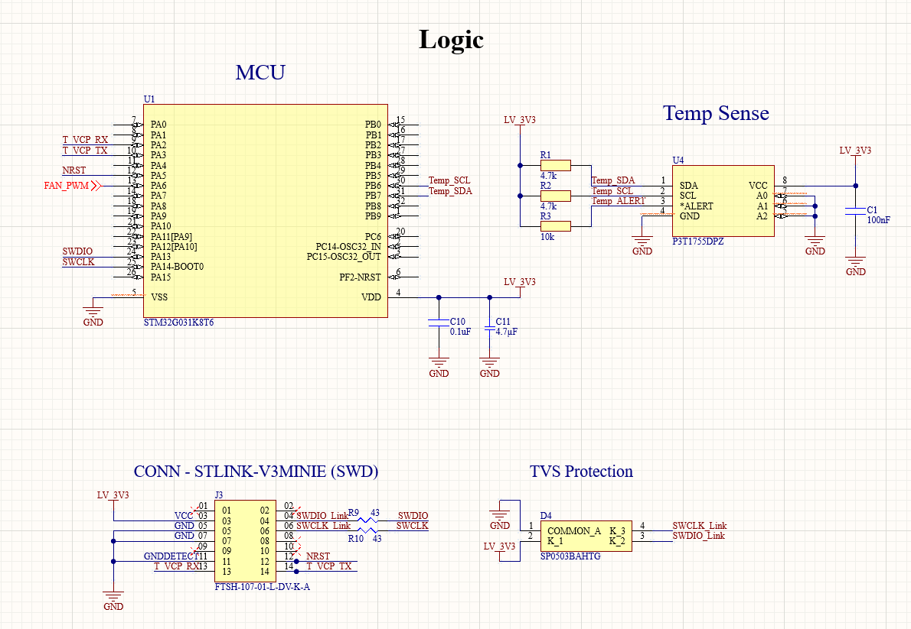
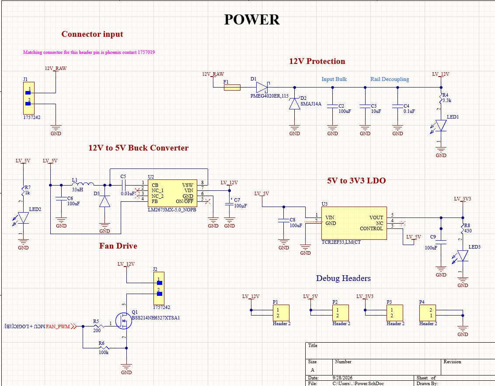
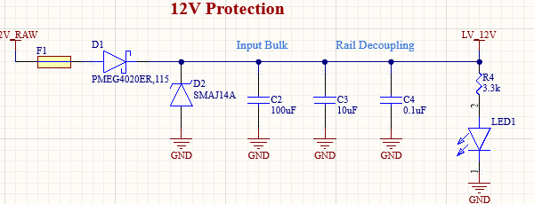
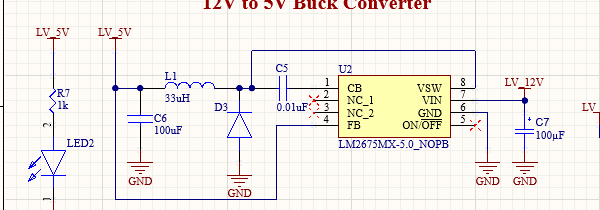
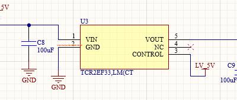
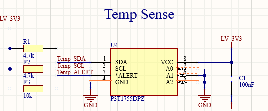
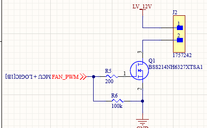
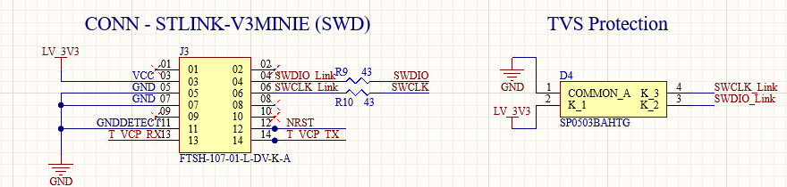

Unlike PDC and lighting, this one's fully mine.
Where the PDC and lighting boards involved inherited architecture, this is an independent project: I designed the schematic, laid out the PCB, and am bringing up the hardware end to end.
The goal was a small closed-loop controller — read temperature over I²C, drive a fan proportionally by PWM, and protect itself if something goes wrong electrically — built around an STM32G031 rather than an off-the-shelf fan controller.

One 12 V input, three regulated rails.
A single 12 V input feeds input protection, a buck stage down to 5 V, and an LDO down to 3.3 V — giving the MOSFET fan drive its own rail separate from the logic and sensing supplies.
I broke each stage out with its own decoupling and a status LED, so a dead rail is visible at a glance during bring-up instead of requiring a meter first.

Four subsystems, one small board.
Closer look at each stage, cropped from the schematic sheets above.
Protected 12 V input
A fuse and a PMEG4020ER Schottky diode guard against reverse polarity, with an SMAJ14A TVS clamping transients before the bulk and decoupling capacitors that follow. A series resistor and LED give a visible 12 V-present indicator.

Buck + LDO regulation
An LM2675 synchronous buck converter steps 12 V down to 5 V for the fan-drive gate circuit, and a TCR2EF33 LDO steps that down further to a clean 3.3 V for the STM32 and temperature sensor — keeping switching noise from the buck stage off the sensitive logic rail.


I²C temperature sensing
A P3T1755DPZ digital temperature sensor reports over I²C, with its own ALERT line back to the MCU. The STM32 sets fan speed from the measured temperature rather than a fixed duty cycle, and can react to the sensor's own threshold alert independent of the main control loop.

MOSFET PWM control
The STM32 drives a BSS214N MOSFET through a gate resistor and pull-down, switching the 12 V fan rail directly under PWM. Running the fan off 12 V rather than the 5 V rail keeps the switching current off the same rail that feeds the logic and sensing circuitry.

Built for bring-up from the start.
An STLINK-V3MINIE-compatible SWD header gives direct programming and debug access to the STM32, with TVS protection on the SWDIO/SWCLK lines so the debug connector doesn't become a weak point once the board is out of the lab.

Photos to follow.
Bring-up on the bench, one subsystem at a time.
I'm validating the power, PWM, and sensing circuitry independently during bring-up: checking the LM2675's 5 V output and the TCR2EF33's 3.3 V output under load, verifying the PWM waveform into the MOSFET gate, and confirming the temperature-to-speed response — using an oscilloscope to check switching behavior and signal integrity at each stage.